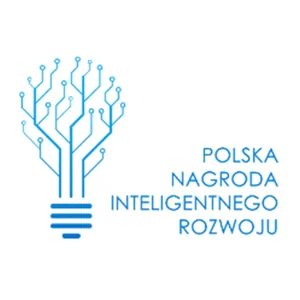
2018
Polska Nagroda Inteligentnego Rozwoju
Centrum Medycyny Klinicznej DiMedical w 2018 roku został laureatem Polskiej Nagrody Inteligentnego Rozwoju w kategorii „Medycyna i farmacja przyszłości”.
Projekt badawczo rozwojowy POIR.01.01.01-00-0798/16 „Prace badawczo – rozwojowe w zakresie opracowania innowacyjnej metody diagnostyki gruźlicy i innych mykobakterioz".
Centrum Medycyny Klinicznej DiMedical to innowacyjna spółka biomedyczna działająca w obszarze medycyny klinicznej, diagnostyki laboratoryjnej, badań B+R, wykorzystując nowoczesne technologie medyczne. Spółka została powołana w 2016 roku w Łodzi, a jej nadrzędnym celem jest opracowywanie i wdrażanie unikalnych metod diagnostycznych z zakresu chorób infekcyjnych oraz nowotworowych.
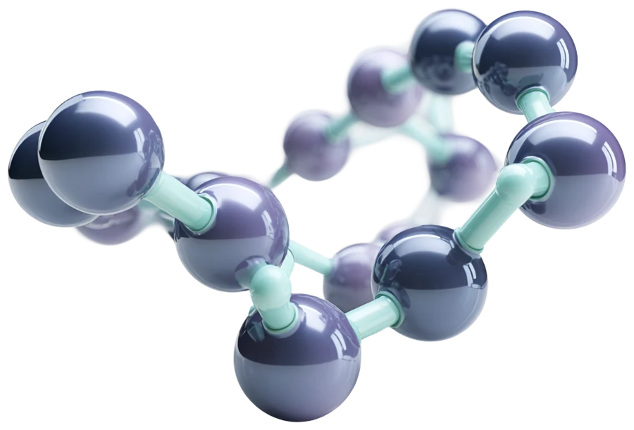
Od 2018 roku nasza praca jest regularnie doceniana przez instytucje branżowe, programy jakości i międzynarodowe systemy kontroli.

Centrum Medycyny Klinicznej DiMedical w 2018 roku został laureatem Polskiej Nagrody Inteligentnego Rozwoju w kategorii „Medycyna i farmacja przyszłości”.
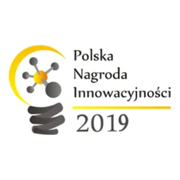
Z przyjemnością informujemy, że firma DiMedical otrzymała nominację do tytułu „Polska Nagroda Innowacyjności 2019” w kategorii medycyna, za realizację projektu związanego z wdrożeniem innowacyjnej metody diagnostyki gruźlicy i innych mykobakterioz.
Niezmiernie cieszymy się, że po raz kolejny nasza firma została doceniona przez Radę Kongresową Polskiego Kongresu Przedsiębiorczości. Nagrodę Fundament 2021 otrzymaliśmy za działania prospołeczne, silnie przyczyniające się do rozwoju diagnostyki w kierunku detekcji wirusa SARS-CoV-2.
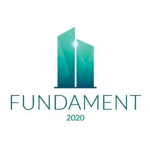
Nasza firma została laureatem nagrody Fundament 2020. Istotną rolę w uzyskanym wyróżnieniu odegrał projekt dotyczący szybkiej diagnostyki gruźlicy. Ową nagrodę traktujemy jako swoiste potwierdzenie, że obrany przez nas kierunek pracy jest dobry i zauważalny w branży.
Centrum Medycyny Klinicznej DiMedical zrealizowało warunki zawarte w Międzynarodowym Programie Zewnętrznej Kontroli Jakości (EQA) SARS-CoV-2. Metodą diagnostyczną poddaną weryfikacji była reakcja RT-PCR.
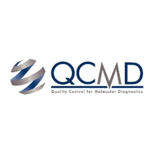
Centrum Medycyny Klinicznej DiMedical uczestniczyło w programie QCMD 2021 SARS-CoV-2 EQA Programme, potwierdzając tym samym wiarygodność wykonywanych czynności diagnostycznych realizowanych w ramach detekcji genomu SARS-CoV-2.
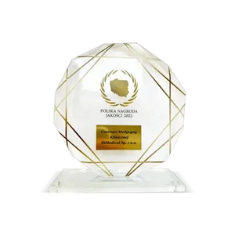
Centrum Medycyny Klinicznej DiMedical w listopadzie 2022 otrzymało Polską Nagrodę Jakości przyznaną przez PAP.
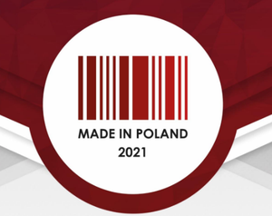
Kongres MADE IN POLAND ma na celu wyeksponowanie potencjału polskich producentów, którzy mają istotny wpływ na kształt i rozwój polskiej gospodarki w różnych gałęziach przemysłu.
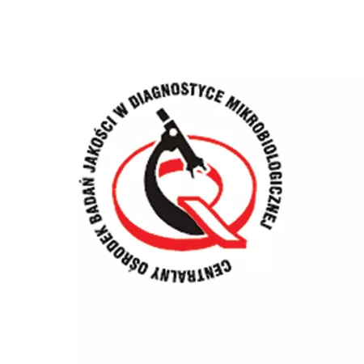
Nasze laboratorium spełniło warunki zawarte w programie POLMICRO/SSE, potwierdzając tym wysoką jakość wykonywanej w ramach centrum diagnostyki mikrobiologicznej.
Diagności laboratoryjni, mikrobiolodzy, biotechnolodzy i specjaliści technik sekwencjonowania genetycznego z doświadczeniem w prowadzeniu prac B+R.
Możliwość rejestracji na badanie online.
Usługi oparte na technikach spektrometrii mas, biologii molekularnej, genetyki oraz mikrobiologii.
Laboratorium przyjmuje pacjentów przez siedem dni w tygodniu.
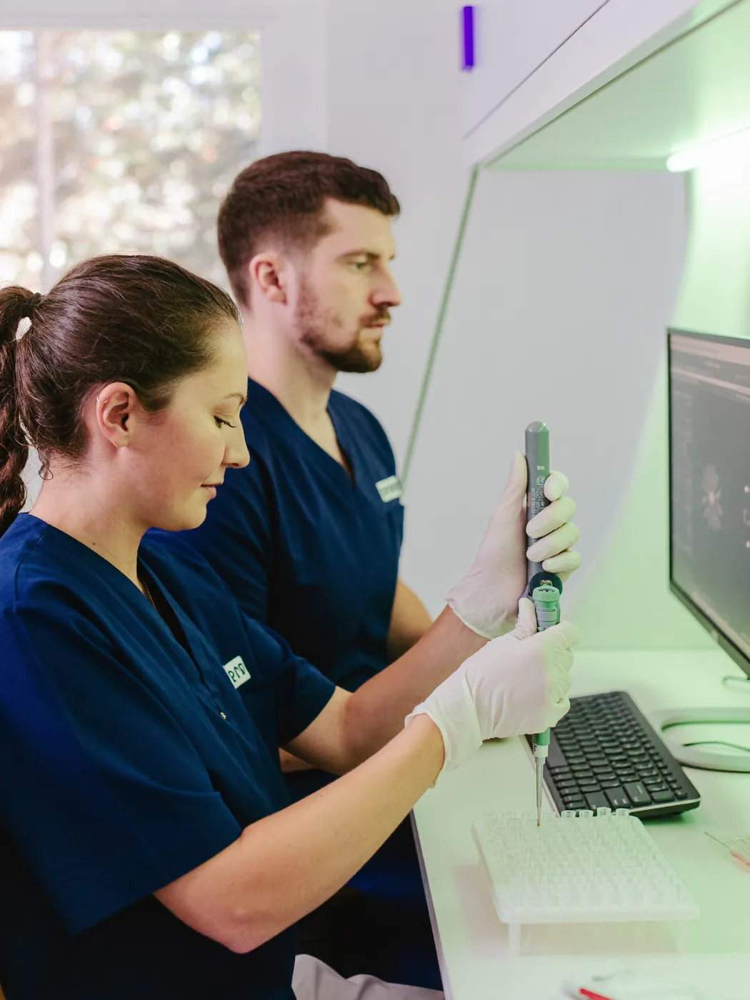
Zdrowie chorego najwyższym prawem
DiMedical, oprócz działalności badawczo-rozwojowej, specjalizuje się w komercyjnej diagnostyce klinicznej i laboratoryjnej.
Spółka świadczy usługi z zakresu medycznej diagnostyki laboratoryjnej (NZOZ), oparte na technikach spektrometrii mas, biologii molekularnej, genetyki oraz mikrobiologii.
Sprawdź nasze badania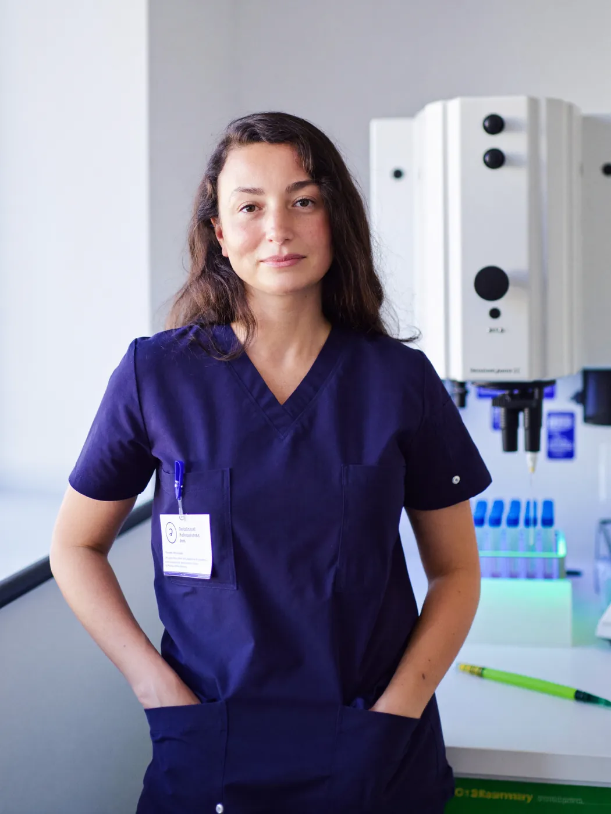
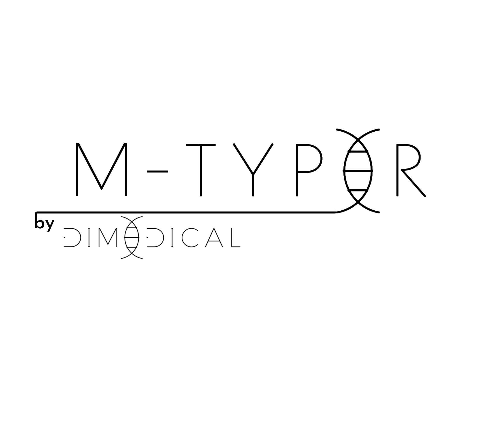
Rozpoczynamy współpracę z największą siecią laboratoriów diagnostycznych w Polsce. Dzięki temu test M-Typer, wykorzystujący technologię tandemowej spektrometrii mas (FIA-MS/MS), będzie…
Dowiedz się więcej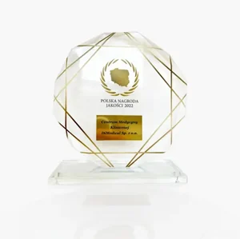
Polska Nagroda Jakości to nagroda gospodarcza przyznawana firmom, które prezentują wysokie standardy zarządzania w swoim środowisku pracy, a także oferują klientom produkt czy usługę najwyższej jakości.
Dowiedz się więcej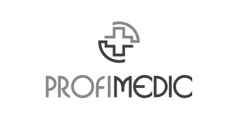
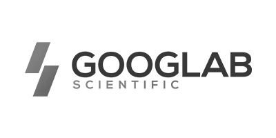
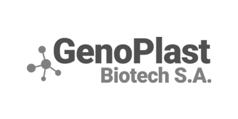
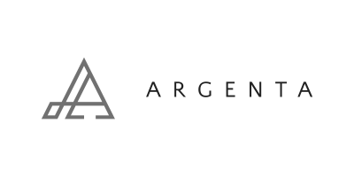
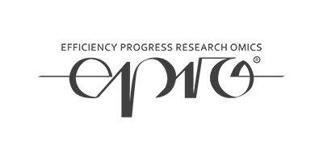
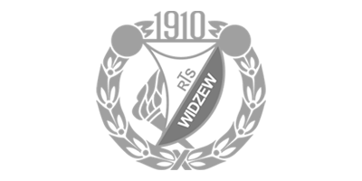
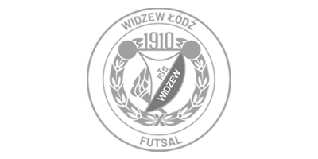
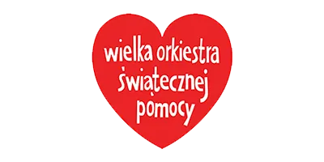
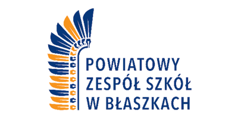
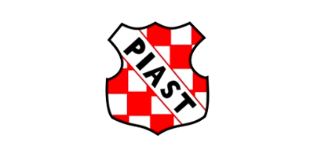
Laboratorium i siedziba spółki mieszczą się pod tym samym adresem — przy ul. Żeromskiego 52 na Starym Polesiu.
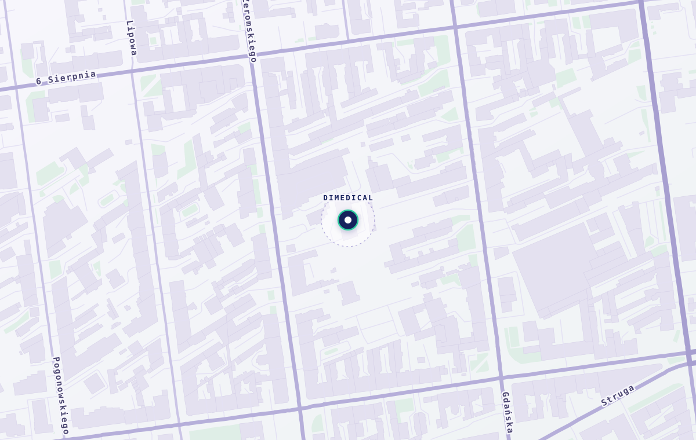
Otwórz w MapachMapa © OpenStreetMap · © CARTO